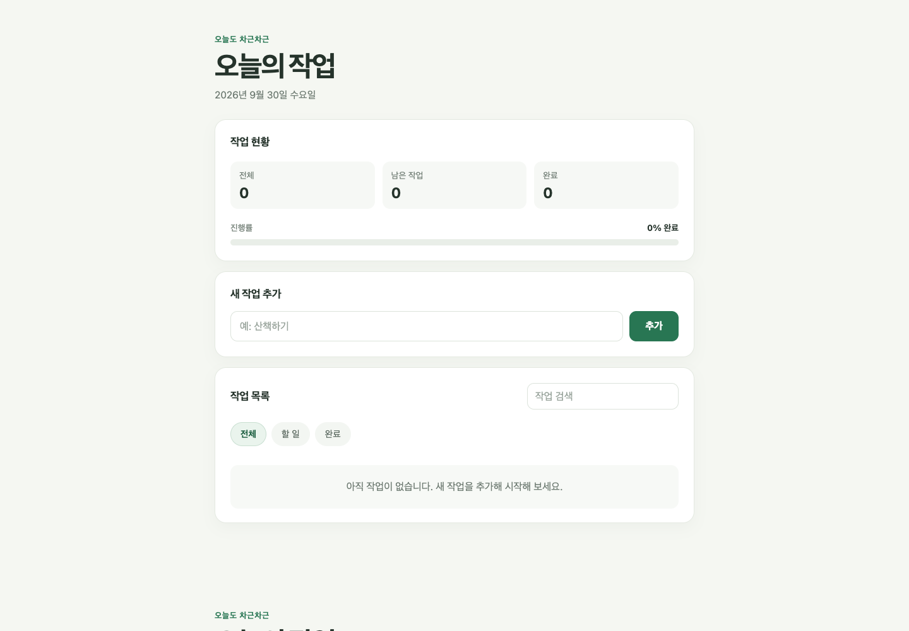
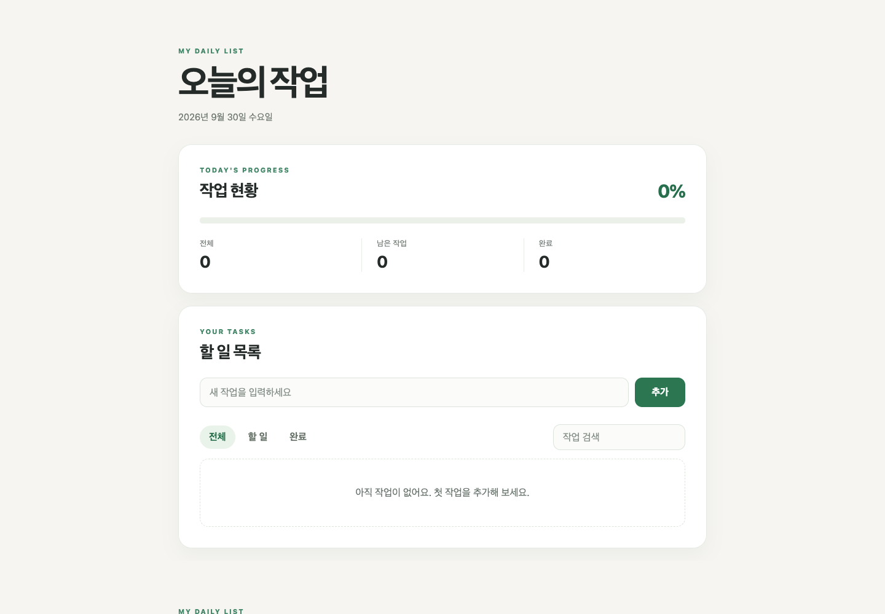

Codex MCPPASS
Paper
파일 목록 · 아트보드 정보 · 화면 이미지 읽기 성공
실제 호출 3종INTEGRATION QA / PAPER · FIGMA · LOOPLINE
Paper MCP의 실제 읽기 도구를 호출하고, Figma MCP 원격 주소의 인증 응답을 확인했습니다. Codex 연결과 Loopline 앱 경로를 분리해 기록했습니다.
파일 목록 · 아트보드 정보 · 화면 이미지 읽기 성공
실제 호출 3종Codex 설정의 로컬 명령을 실행할 수 없음
spawn paper ENOENTCodex 도구는 현재 미노출, Loopline은 무인증 요청을 거부함
Figma 도구 0개 · Loopline HTTP 401MCP 서버 목록 API가 현재 앱에서 없음
GET /api/mcp/servers → 404판정 / VERDICT
Loopline 소스는 stdio와 Streamable HTTP 연결을 지원하지만, 현재 실행 중인 데스크톱 앱은 MCP 기능이 포함되기 전 빌드입니다. 소스 어댑터에서 Paper는 실행 파일을 찾지 못했고, Figma는 인증에서 멈췄습니다.
01 / MCP CONNECTIVITY
02 / WEBSITE OUTPUTS · PREVIOUS BENCHMARK
두 화면은 2026-09-30에 같은 요구사항으로 만들었던 ‘오늘의 작업’ 웹사이트입니다. 이번 Paper/Figma 연결 검사와는 별도 실험입니다.
SINGLE MODEL

MULTI-ROLE LOOP

이전 1회씩의 웹 제작 측정 결과입니다. Loop는 보고 토큰이 35.3% 적고 소요 시간이 61.7% 짧았지만, 이번 MCP 연결 성공이나 반복 성공률을 뜻하지 않습니다. Loop의 첫 Gemini 시도는 HTTP 503으로 실패했고, 모델 변경 뒤 재실행이 완료됐습니다.
03 / TEST METHOD
Codex의 Paper MCP로 list_files, get_basic_info, get_screenshot를 호출했습니다. 세 호출 모두 응답을 받았습니다.
임시 설정만 사용했습니다. Paper는 로컬 실행 파일 부재로 연결 실패, Figma는 무인증 요청에 401을 반환했습니다. 인증값은 읽거나 저장하지 않았습니다.
현재 패키지 앱의 로컬 API를 확인했습니다. MCP 목록 경로가 404이고 저장된 Loopline MCP 연결도 없었습니다. 브라우저의 4173 포트는 Python 정적 미리보기입니다.